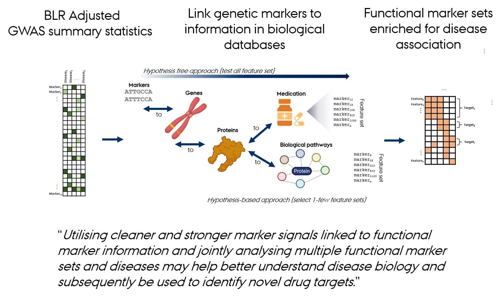
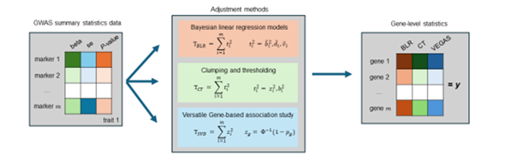
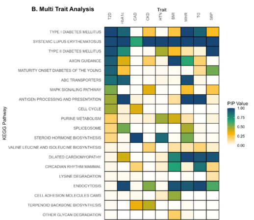
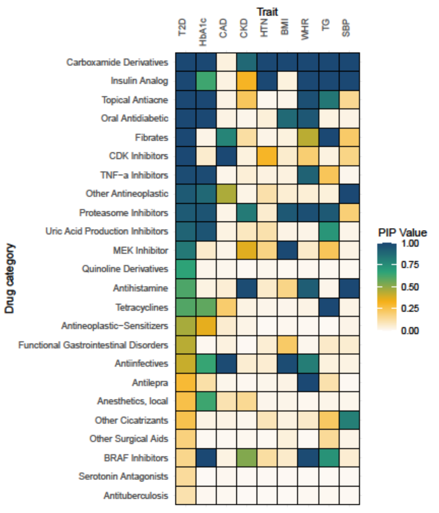
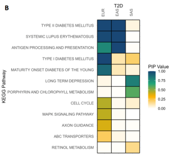

Gene Set Analyses using Bayesian MAGMA Models
Center for Quantitative Genetics and Genomics, Aarhus University, Denmark
Genomic Medicine, Department of Health Science and Technology, Aalborg University, Denmark
From GWAS to Biological Discovery

Gene Set Analysis
Gene set analysis evaluates the coordinated action of genes or sets of variants within predefined biological pathways or functional groups.
GWAS identify single genetic variants (SNPs) associated with traits or diseases.
Many variants have small individual effects
→ Use larger datasets or make better use of existing data.Some effects are clustered within functionally related genes or pathways
→ Use prior information on functional marker groups to improve detection power and interpretation.Some effects are shared across multiple traits
→ Leverage correlated trait information to enhance detection power and prediction accuracy.
Gene Set Analyses
Many different gene set analysis approaches have been proposed.
MAGMA: Multi-marker Analysis of GenoMic Annotation (Leuww et al 2015)
- generalized gene set analysis of GWAS data
- based on a multiple regression model
- rank gene sets
PoPS: Polygenic Prioritisation Scoring (Weeks et al 2023)
- leveraging polygenic enrichment of gene features (e.g. gene sets) to predict genes underlying complex diseases
- based on a multiple regression model
- rank genes
MAGMA: Linear Model Approach
MAGMA fits a linear regression model to test associations between gene sets and traits.
- Aggregate SNP-level GWAS statistics into gene-level statistics, accounting for LD.
- Use gene-level statistics as the response variable.
- Represent gene sets as a predictor matrix, typically indicating gene membership, but not necessarily limited to binary values.
- Estimate regression coefficients to assess the strength of association between each gene set and the trait.
- Evaluate significance using permutation or model-based null distributions.
MAGMA: Limitations
When analyzing thousands of gene sets, several issues arise:
- Overfitting – the model may capture noise rather than true signals.
- Multicollinearity – many gene sets are correlated due to biological overlap.
- Multiple testing – increases false-positive risk.
- Interpretation difficulty – hard to disentangle contributions of overlapping sets.
→ Use of regularization and variable selection to improve model robustness and interpretability.
Additionally, many complex traits are genetically correlated, sharing overlapping biological pathways.
→ Incorporating multi-trait information in MAGMA can increase detection power and reveal shared genetic mechanisms across traits.
Bayesian MAGMA: Idea
Develop and evaluate a Bayesian gene-set prioritization approach using BLR within the MAGMA framework.
- Advantages:
- Incorporates regularization and variable selection via spike-and-slab priors.
- Controls false positives and handles overlapping gene sets.
- Provides posterior inclusion probabilities (PIP) as evidence of gene set association.
- Incorporates regularization and variable selection via spike-and-slab priors.
- Flexible framework supporting:
- Single- and multi-trait models
- Integration of diverse genomic features
- Modeling of correlated traits to uncover shared genetic factors.
- Single- and multi-trait models
Bayesian MAGMA: Regression Model
The Bayesian MAGMA framework builds on the standard regression model:
\[ \mathbf{Y} = \mathbf{X}\boldsymbol{\beta} + \boldsymbol{\varepsilon}, \qquad \boldsymbol{\varepsilon} \sim \mathcal{N}(0, \sigma^2 \mathbf{I}) \]
- \(\mathbf{Y}\) — vector of observed outcomes or gene-/set-level association measures
- \(\mathbf{X}\) — matrix of genomic predictors (e.g., gene membership, functional annotations, or pathway indicators)
- \(\boldsymbol{\beta}\) — vector of effect sizes describing how predictors in \(\mathbf{X}\) explain variation in \(\mathbf{Y}\)
- \(\boldsymbol{\varepsilon}\) — residual noise capturing unexplained variation
In the Bayesian formulation, each \(\beta_j\) is assigned a prior distribution that encodes assumptions about effect size magnitude, sparsity, or functional grouping.
These priors enable regularization, variable selection, and information sharing across correlated features or biological layers.
Bayesian MAGMA: Multivariate Motivation
- Traditional single-trait analyses may miss associations that are
weak individually but consistent across traits.
- Multi-trait Bayesian MAGMA leverages these correlations by
jointly modeling multiple traits to:- Increase power for detecting gene sets and pathways,
- Improve accuracy of effect estimation, and
- Reveal shared biological mechanisms underlying complex diseases.
- Increase power for detecting gene sets and pathways,
Bayesian MAGMA: Multivariate Regression Model
In the multivariate BLR model, we model multiple correlated outcomes jointly:
\[ \mathbf{Y} = \mathbf{X}\mathbf{B} + \mathbf{E} \]
- \(\mathbf{Y}\): \((n \times T)\) matrix of outcomes
(e.g., association measures for \(T\) traits or omic layers)
- \(\mathbf{X}\): \((n \times p)\) feature matrix
- \(\mathbf{B}\): \((p \times T)\) matrix of effect sizes
- \(\mathbf{E}\): \((n \times T)\) residual matrix
Each row of \(\mathbf{Y}\) corresponds to an observation or gene, and each column to a trait, phenotype, or molecular layer.
Bayesian MAGMA: Error and Effect Priors
We extend the univariate priors to the multivariate setting: \[ \mathbf{e}_{i\cdot} \sim \mathcal{N}_T(\mathbf{0}, \boldsymbol{\Sigma}_e) \] \[ \mathbf{b}_{j\cdot} \sim \mathcal{N}_T(\mathbf{0}, \boldsymbol{\Sigma}_b) \]
\(\boldsymbol{\Sigma}_e\): residual covariance among traits (\(\mathbf{e}_{i\cdot}\) is the vector of residuals for observation \(i\) across all \(T\) traits)
\(\boldsymbol{\Sigma}_b\): covariance of effect sizes across traits (\(\mathbf{b}_{j\cdot}\) is the vector of effect sizes for feature \(j\) across all \(T\) traits)
When the off-diagonal elements are nonzero, the model borrows information across correlated traits, enabling detection of pleiotropic effects and shared genetic factors.
When \(\boldsymbol{\Sigma}_e\) and \(\boldsymbol{\Sigma}_b\) are diagonal, the model reduces to \(T\) independent univariate BLR models.
Bayesian MAGMA: Indicator Variables
Each feature \(j\) may affect multiple outcomes (traits).
We define an indicator vector for cross-trait activity patterns:
\[ \boldsymbol{\delta}_j = \begin{bmatrix} \delta_{j1} \\ \delta_{j2} \\ \vdots \\ \delta_{jT} \end{bmatrix}, \qquad \delta_{jt} = \begin{cases} 1, & \text{if feature $j$ affects trait $t$}, \\ 0, & \text{otherwise.} \end{cases} \]
After Gibbs sampling, the posterior inclusion probability (PIP) is estimated as:
\[ \widehat{\text{PIP}}_{jt} = \frac{1}{M} \sum_{m=1}^{M} \mathbb{I}\!\left(\delta_{jt}^{(m)} = 1\right) \approx P(\delta_{jt} = 1 \mid \text{data}), \]
representing the probability that feature \(j\) is associated with trait \(t\).
Bayesian MAGMA: Posterior Parameters
In the multivariate setting, we generalize each posterior quantity:
| Parameter | Interpretation |
|---|---|
| \(\mathbf{B} = [\beta_{jt}]\) | Effect matrix across traits (\(j\): feature, \(t\): trait) |
| \(\mathbf{PIP} = [\text{PIP}_{jt}]\) | Posterior inclusion probability matrix (\(j\): feature, \(t\): trait) |
| \(\boldsymbol{\Sigma}_b\) | Covariance of effects across traits |
| \(\boldsymbol{\Sigma}_e\) | Residual covariance among traits |
These posterior quantities allow us to identify:
- Shared genetic effects (pleiotropy)
- Trait-specific vs. shared signals
- Cross-trait enrichment of biological or functional sets
Bayesian MAGMA. Study Aim and Design
Evaluate a Bayesian gene-set prioritization approach using BLR within the MAGMA framework.
Simulation study:
- Assessed model performance under varying gene set characteristics and genetic architectures.
- Used UK Biobank genetic data for realistic evaluation.
Comparative analysis:
- Benchmarked Bayesian MAGMA against the standard MAGMA approach.
Applications:
- Applied to nine complex traits using publicly available GWAS data.
- Developed a multi-trait BLR model to integrate GWAS results across traits and uncover shared genetic architecture.
Bayesian MAGMA: Overview

- Fits a Bayesian regression model that allows regularization and variable selection
- Supports single- or multi-trait a nalyses
- Identifies associated features based on posterior inclusion probabilities (PIPs) for the regression effects
Gholipourshahraki et al., 2024
Bayesian MAGMA: Gene-level Statistics

Compute gene-level (or other feature-level) association statistics:
- Account for correlation among marker statistics (i.e., linkage disequilibrium, LD)
- Different LD-adjustment methods (e.g., SVD, clumping and thresholding, BLR)
- The choice of method depends on the quality of the available GWAS summary statistics and LD reference panel
Bai et al., 2025
Bayesian MAGMA – KEGG Pathway
- GWAS summary statistics from nine studies (T2D, CAD, CKD, HTN, BMI, WHR, Hb1Ac, TG, SBP)
- Gene sets are defined by genes linked to KEGG pathways.
- Pathways relevant to diabetes are associated with Type 2 Diabetes (T2D) and correlated traits
- Enables identification of cross-disease patterns to better understand comorbidities

Gholipourshahraki et al., 2024
Bayesian MAGMA – DGIdb
- Gene sets are defined by genes linked to the Anatomical Therapeutic Chemical (ATC) classification system using the Drug–Gene Interaction Database (DGIdb)
- Drug gene sets relevant to diabetes show associations with Type 2 Diabetes (T2D) and related traits
- Novel drug–gene set associations may reveal opportunities for drug repurposing

Hjelholt et al., 2025
Bayesian MAGMA – Across Ancestries
- Gene sets are defined by genes linked to KEGG pathways.
- Joint analysis of T2D across three ancestries (EUR, EAS, SAS).
- Pathways relevant to diabetes show associations with Type 2 Diabetes (T2D) across two of the ancestries (EUR and EAS).
- Comparing these associations helps reveal ancestry-specific biological mechanisms.

Summary
Advantages
- Incorporates regularization and variable selection via spike-and-slab priors
- Accounts for correlated gene sets and traits, increasing power and reducing false positives
- Provides posterior inclusion probabilities (PIPs) as interpretable measures of association strength
- Flexible framework supporting:
- Single- and multi-trait models
- Integration of diverse genomic features
- Modeling of correlated traits to uncover shared genetic architecture
- Single- and multi-trait models
Limitations
- Dependent on the quality and resolution of GWAS summary statistics
- Sensitive to biases and incompleteness in functional annotations (e.g., tissue specificity, experimental noise, or overrepresentation of well-studied genes)
- Computationally more demanding than standard MAGMA, especially for multi-trait analyses
Future Work
- Offers opportunities for hierarchical model extensions (e.g., grouping by genomic or functional layers)
- Multi-omics integration to capture regulatory complexity across biological layers
- Systematic comparisons with machine learning and deep learning methods to evaluate performance and scalability
References
Sørensen P, Rohde PD. A Versatile Data Repository for GWAS Summary Statistics-Based Downstream Genomic Analysis of Human Complex Traits.
medRxiv (2025). https://doi.org/10.1101/2025.10.01.25337099
Sørensen IF, Sørensen P. Privacy-Preserving Multivariate Bayesian Regression Models for Overcoming Data Sharing Barriers in Health and Genomics.
medRxiv (2025). https://doi.org/10.1101/2025.07.30.25332448
Hjelholt AJ, Gholipourshahraki T, Bai Z, Shrestha M, Kjølby M, Sørensen P, Rohde P. Leveraging Genetic Correlations to Prioritize Drug Groups for Repurposing in Type 2 Diabetes. medRxiv (2025). https://doi.org/10.1101/2025.06.13.25329590
Gholipourshahraki T, Bai Z, Shrestha M, Hjelholt A, Rohde P, Fuglsang MK, Sørensen P. Evaluation of Bayesian Linear Regression Models for Gene Set Prioritization in Complex Diseases. PLOS Genetics 20(11): e1011463 (2025). https://doi.org/10.1371/journal.pgen.1011463
Bai Z, Gholipourshahraki T, Shrestha M, Hjelholt A, Rohde P, Fuglsang MK, Sørensen P. Evaluation of Bayesian Linear Regression Derived Gene Set Test Methods. BMC Genomics 25(1): 1236 (2024). https://doi.org/10.1186/s12864-024-11026-2
Shrestha M, Bai Z, Gholipourshahraki T, Hjelholt A, Rohde P, Fuglsang MK, Sørensen P. Enhanced Genetic Fine Mapping Accuracy with Bayesian Linear Regression Models in Diverse Genetic Architectures. PLOS Genetics 21(7): e1011783 (2025). https://doi.org/10.1371/journal.pgen.1011783
Kunkel D, Sørensen P, Shankar V, Morgante F. Improving Polygenic Prediction from Summary Data by Learning Patterns of Effect Sharing Across Multiple Phenotypes. PLOS Genetics 21(1): e1011519 (2025). https://doi.org/10.1371/journal.pgen.1011519
Rohde P, Sørensen IF, Sørensen P. Expanded Utility of the R Package qgg with Applications within Genomic Medicine. Bioinformatics 39:11 (2023). https://doi.org/10.1093/bioinformatics/btad656
Rohde P, Sørensen IF, Sørensen P. qgg: An R Package for Large-Scale Quantitative Genetic Analyses. Bioinformatics 36(8): 2614–2615 (2020). https://doi.org/10.1093/bioinformatics/btz955
Overview of BLR Models used in Gene Set Analyses
| Model Type | Feature Integration | Grouping Basis | Prior Structure | What It Captures |
|---|---|---|---|---|
| Single-component BLR | Combines all biological features in one model | None | One global variance (\(\tau^2\)) | All features contribute equally; uniform shrinkage |
| Multiple-component BLR | Integrates all layers but allows heterogeneous contributions | Learned from data | Mixture of variances (\(\{\tau_k^2\}\)) | Large, small, and null effect classes |
| Hierarchical BLR | Groups features by biological structure (e.g., genes, pathways) | Defined a priori | Group-specific mixture of variances (\(\{\tau_{gk}^2\}\)) | Within-group heterogeneity; enrichment and structured shrinkage |
| Multivariate BLR | Jointly models multiple correlated traits or outcomes | None or by trait | Shared covariance (\(\boldsymbol{\Sigma}_b\)) across traits | Genetic/molecular correlations; pleiotropy |
| Hierarchical MV-BLR | Combines biological grouping and multiple outcomes | Defined a priori | Group- and trait-specific covariance mixtures (\(\{\boldsymbol{\Sigma}_{b,gk}\}\)) | Shared biological mechanisms across traits and layers |
Learning at Different Levels
| Model Level | Key Parameters Learned | What They Represent | How They Are Learned | What We Learn Biologically |
|---|---|---|---|---|
| Effect sizes | \(\boldsymbol{\beta}\) | Strength and direction of association for each feature | Posterior mean/median given priors and data | Which features drive the outcome |
| Indicator variables | \(\delta_j\) (single trait), \(\boldsymbol{\delta}_j\) (multi-trait) | Whether feature \(j\) is active (and for which traits) | Estimated as posterior inclusion probabilities (PIPs) | Which features are relevant, and whether effects are shared or trait-specific |
| Variance components | \(\tau^2\), \(\{\tau_k^2\}\), \(\{\tau_{gk}^2\}\) | Magnitude of expected effect sizes; heterogeneity across layers or groups | Inferred hierarchically from the data (via MCMC or EM) | How strongly different groups or omic layers contribute |
| Covariance components | \(\boldsymbol{\Sigma}_b\), \(\{\boldsymbol{\Sigma}_{b,g}\}\) | Correlation of effects across traits or molecular layers | Estimated from joint posterior | Shared pathways, pleiotropy, and cross-layer architecture |